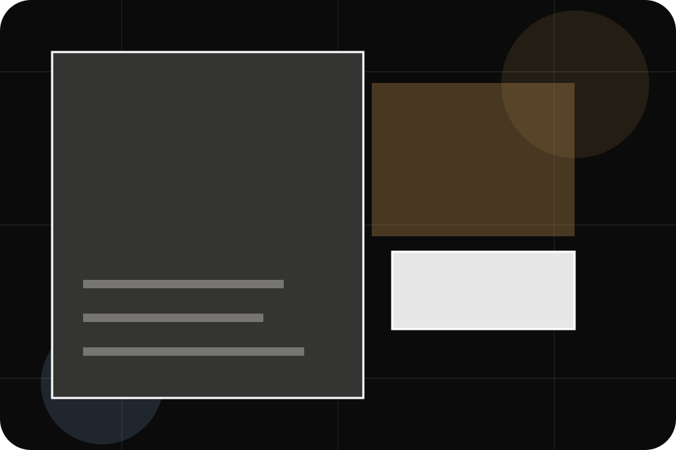
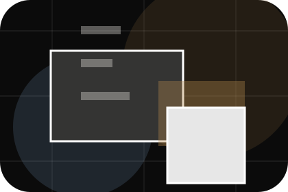
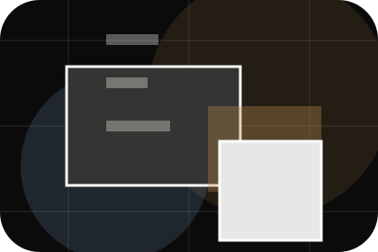
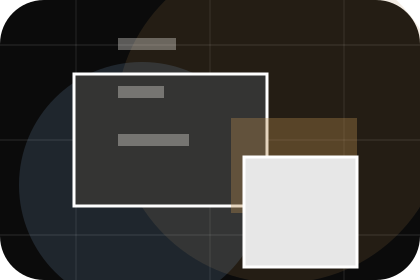
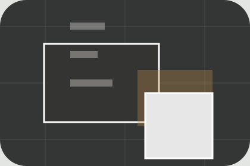

Question
Safety gives the page a specific angle instead of repeating the navigation label.
FAQ / 01
FAQ opens as a clear travel decision hub: what Atlas offers, who it helps, why it matters, and which route to take first.
The first screen combines positioning, proof, primary action, and fast internal navigation, so people can act immediately or compare the rest of the faq route with context.
Immersive trip hero
Select the closest route and Atlas keeps the next step, proof, and follow-up expectation aligned with wanderlust and practical planning.

FAQ / 02
Visas handles buying doubts directly so visitors can understand timing, fit, limits, and the safest next step.
Answers are short by design: enough to remove hesitation, not so much that the page turns into documentation before the visitor can act.
Explore FAQVisas gives the page a specific angle instead of repeating the navigation label.
The journey story cards show what to compare, what to avoid, and what matters most for travel, tourism & destination experiences visitors.
The final cue points to a useful internal route so the section keeps the journey moving.
FAQ / 03
Safety handles buying doubts directly so visitors can understand timing, fit, limits, and the safest next step.
Answers are short by design: enough to remove hesitation, not so much that the page turns into documentation before the visitor can act.
Explore FAQSafety gives the page a specific angle instead of repeating the navigation label.
The journey story cards show what to compare, what to avoid, and what matters most for travel, tourism & destination experiences visitors.
The final cue points to a useful internal route so the section keeps the journey moving.
FAQ / 04
Weather handles buying doubts directly so visitors can understand timing, fit, limits, and the safest next step.
Answers are short by design: enough to remove hesitation, not so much that the page turns into documentation before the visitor can act.
Explore FAQ

Weather gives the page a specific angle instead of repeating the navigation label.
FAQ / 05
Payments makes commercial comparison easier by showing fit, scope, and terms before travel visitors ask for the next step.
The layout keeps price-sensitive decisions honest: it separates starting scope, fuller delivery, and ongoing support so the visitor can ask a sharper question.
Explore FAQWho the offer is for, which scope it suits, and when a different route may be better.
What is included clearly enough for travel, tourism & destination experiences visitors to compare value without hidden jargon.
The practical details that should be confirmed before someone asks to plan a trip.
FAQ / 06
Cancellations handles buying doubts directly so visitors can understand timing, fit, limits, and the safest next step.
Answers are short by design: enough to remove hesitation, not so much that the page turns into documentation before the visitor can act.
Explore FAQCancellations gives the page a specific angle instead of repeating the navigation label.
The journey story cards show what to compare, what to avoid, and what matters most for travel, tourism & destination experiences visitors.
The final cue points to a useful internal route so the section keeps the journey moving.
FAQ / 07
Insurance handles buying doubts directly so visitors can understand timing, fit, limits, and the safest next step.
Answers are short by design: enough to remove hesitation, not so much that the page turns into documentation before the visitor can act.
Explore FAQAtlas structures insurance around question, answer, and a clear next route so visitors can compare the block quickly before they plan a trip.
Plan TripFAQ / 09
Support explains the practical scope, best-fit situations, and expected outcome so travel visitors can compare options without decoding jargon.
The section keeps the offer concrete: what is included, who it is best for, what decision it supports, and which linked route gives the deeper detail.
Open ContactWho should use support and when it belongs in the faq journey.
The practical benefit visitors should expect after choosing this route.

Where to compare details, pricing, support, or contact options before committing.
FAQ / 10
Atlas closes the faq route with a clear action, a quick reminder of the value, and a low-friction way to plan a trip.
Visitors who are ready can use the primary action. Visitors who are still comparing can scan the section links, proof, and support routes before they plan a trip.
Plan TripThe final block keeps the choice simple: act now, compare one more proof route, or send enough detail for a focused response.
Plan Tripwanderlust and practical planning
A travel-planning site with dark editorial hero, trip story cards, itinerary accordions, and bespoke enquiry. FAQ ends with a direct path to plan a trip, plus enough context for visitors who still need to compare.

Plan TripTravel plans may depend on visas, health rules, weather, operator availability, and insurance terms.